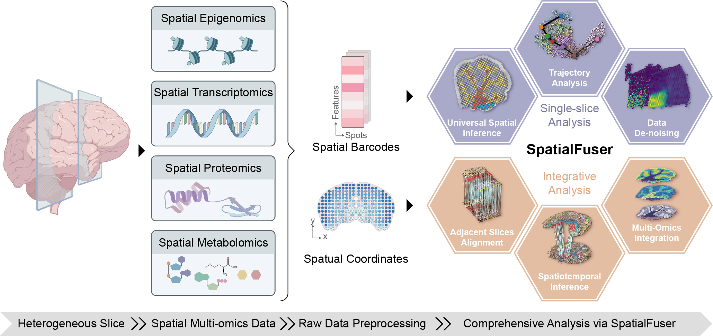

SpatialFuser: Universal Framework for Spatial Multi-Omics Data Integrative Analysis
SpatialFuster is a unified framework for fine-grained single-slice analysis and cross-sample integrative analysis across modalities including epigenomics, transcriptomics, proteomics, and metabolomics.
{kind=link}
Key Applications of SpatialFuser
Fine Spatial Interpretation:
As the first method designed for universal inference of spatial multi-omics, SpatialFuser leverages the MCGATE module to accurately detect spatial distributions of tissue domains or cell types across diverse modalities and technology platforms, including highly heterogeneous tumor tissues.
Accurate Cross-Slice Alignment:
SpatialFuser provides multiple coordinate registration strategies tailored to different alignment scenarios：
ICP algorithm for slices with well-defined structural grids or regular anatomical boundaries.
NDT algorithm for sparse, noisy, or irregular spot distributions.
By coupling alignment and integration, SpatialFuser jointly addresses these two tasks through an iteratively trained dual-layer architecture consisting of a matching layer based on the Sinkhorn algorithm and a fusion layer grounded in contrastive learning. This design enables:
Continuous slices alignment: ensuring smooth reconstruction of three-dimensional tissue structures.
Align slices across differnt developmental stages: capturing dynamic reorganization of tissue morphology during growth or regeneration.
Cross-resolution alignment: harmonizing datasets acquired from different platform.
Cross-modality alignment: registering tissue slices across different molecular layers.
Spatial Muti-Omics Data Integration:
SpatialFuser can effectively capture shared spatial molecular patterns across the different omics layers to correct modality bias. Its design offers several key advantages:
Broad modality coverage: supports diverse data types including epigenomics, transcriptomics, proteomics, and metabolomics.
Robust cross-modality integration: applicable to both strongly correlated omics(e.g., genome–transcriptome with near one-to-one correspondence) and weakly correlated modalities(e.g., transcriptome–proteome).
Prevention of over-integration: achieved through strict anchor selection and reconstruction supervision, ensuring that modality-specific features are preserved and biologically meaningful variation is not lost.
Application Examples
Fine Spatial Interpretation
Detection of spatial domains in the 10X Visium DLPFC dataset.
Detection of spatial domains in the osmFISH mouse somatosensory cortex dataset.
Detection of main celltype distribution in the CODEX human muscle-invasive bladder cancer tumor dataset.
Integration and Alignment
Integration and alignment of adjacent slices from the BaristaSeq mouse visual cortex dataset.
Integration and alignment of Stereo-seq data representing axolotl regenerative telencephalon at developmental stages 54 and 57.
Integration of homologous Spatial ATAC–RNA-seq slices.
Integration and alignment of transcriptomic (MAGIC-seq), proteomic (PLATO), and metabolomic (MALDI-MSI) data obtained from consecutive mouse cerebellum tissue slices.